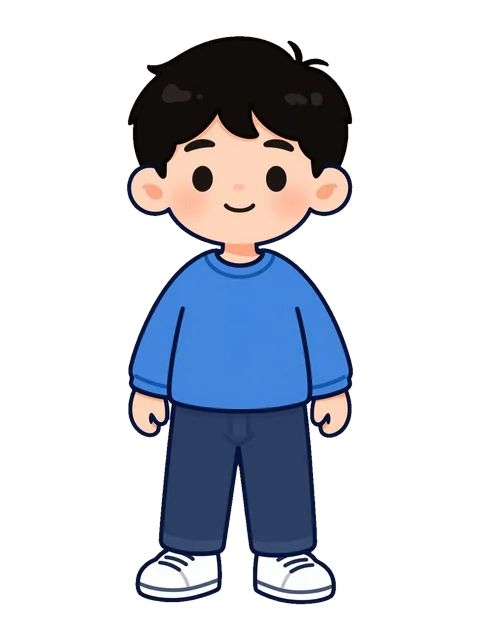
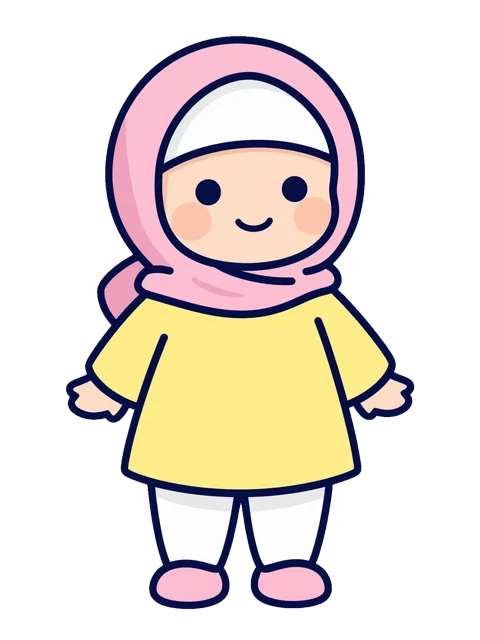

الشَّخْصِيَّاتُ · Cast sheet — one scale, front-on. Check every new picture against it.



نُورِي Noori
A young seagull: round white-cream body, grey wings with dark tips, small orange beak, big kind eyes, pink cheeks, teal scarf, orange feet. Never scary, no text on him, no kufi.
سَامِي Sami
A boy of about 7: short black curly hair, uncovered; blue long-sleeved sweater, dark trousers, white trainers. Round face, warm skin.
سَلْمَى Salma
A girl of about 7: pink headscarf over a white under-cap, no hair showing; long sleeves; yellow dress over long white trousers, socks and pink shoes. A curious, happy face.
Nawras Fusha School · reference for assets/art (site) and book/art-hi (books). Source stickers: assets/art/noori/happy.webp, assets/art/pic/boy.webp, assets/art/pic/girl.webp.